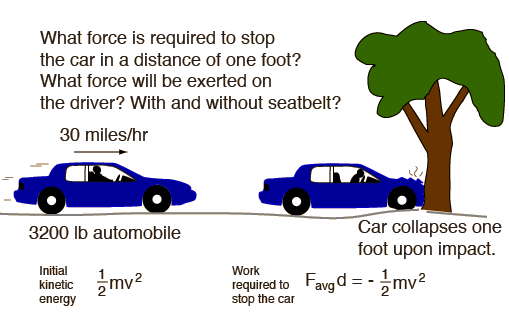
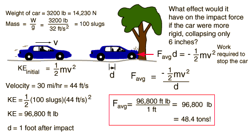
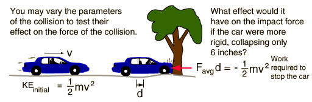

Forces in Car Crashes
|
Index Work-energy principle | |||
| HyperPhysics***** Mechanics | Go Back |
Example of Force on Car (This initial example is cast in U.S. common units because most U.S. readers can make comparisons to known forces more easily in those terms. The calculation provides the results in SI units as well.) Vary the parameters of the collision |
Index Work-energy principle |
| HyperPhysics***** Mechanics | Go Back |
Calculation of Force on Car You may change any data value. Clicking outside the box will then initiate a calculation of the impact force and conversion of the data value to the other types of units. Discussion of car crash scenario |
Index Work-energy principle |
| HyperPhysics***** Mechanics | Go Back |